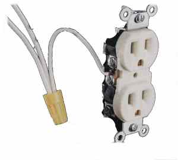

I'm an emontx v3 user in the US monitoring a series of specific circuits in my house (specifically my heat pump, water heater, and ground loop temps), but I've yet to expand to whole house monitoring. As it stood last year, the only whole house US solution that existed required a resistor change on the emontx to work with CTs large enough to handle a 4/0 wire serving 200 amp service which is probably the most common configuration out here. I searched the threads but didn't really see any movement on this, but I'm curious if I missed something. As it stands is it still the case the a burden resistor change is necessary on the emontxV3 to measure whole house 200 amp service in the US? I suppose it isn't possible to choose which resistor the emontx ships with? I'd love to add a second emontx to measure my whole house usage in addition to my heatpump and water heater usage so I can continue to track down the appliances that are power hungry.
Any help is greatly appreciated!
Re: Turnkey system for the US?
Yes, I'm afraid a resistor change will be required. The emonTx is manufactured in the UK, where an 80 A or 100 A feed is normal.
There are holes provided for a wire-ended resistor, so you need to remove the SMT component and add a wire-ended one in its place.
I normally recommend the 600 A SCT-1250-000 with a 37.5 Ω burden. Although Magnelab devices are available factory-calibrated for a 1 V output (which will require NO burden resistor - it's internal), it is not clear whether this is a 600 A CT suitably derated to 200 A. I advise you have the distributor confirm the rating if you purchase this option.
I understand there is also a suitable transformer available from Wattcore.
Re: Turnkey system for the US?
A soldering iron is all that I would need to pop out the resistor?
Re: Turnkey system for the US?
You might also need a pair of tweezers or similar to lift it off. You'll need to melt the solder at both ends simultaneously, or you risk lifting the tracks off the board.
Further information from Magnelab suggests that their 200 A CTs with 1 V output are indeed suitable for the full 200 A, and of course do not need a burden resistor.
Re: Turnkey system for the US?
Can you point me to the magelabs CT that would work for this? I can only find CTs that output 0.33v on their website...
Re: Turnkey system for the US?
Here's a link that will take you to the page where you can specify the 1 Volt option. The option checkboxes are on the bottom part of the page.
www.aimdynamics.com/SCT-0750-Split-Core-Current-Sensor-333mV-Output-p/sct-0750.htm
Re: Turnkey system for the US?
Ok, that's interesting. Has anybody used these guys with success?
Re: Turnkey system for the US?
I've been recommending them for some time and not heard any complaints.
Re: Turnkey system for the US?
Ok, I will give it a shot, and report back. If I can get this thing running 0-1V out, that means I'm good to go on using a stock emontx V3, correct?
Re: Turnkey system for the US?
Ok, the CT came in today, and I'm awaiting my second emontxV3. In the meantime, I realized that I need to get a 3.5mm plug onto the CT sensor. This is a naive question, but will any plug work, and is there a certain way to connect it? The CT has two wires coming out of it. The other question I have is whether I need to change/remove the burden resistor on the emontx. I chose the 0-1V up to 200a option on the CT (SCT 0750-200). Once again, input is appreciated!
Re: Turnkey system for the US?
1. A 3.5 mm jack plug is required. Connect the CT secondary to tip and sleeve. If it's a "stereo" plug, there's no connection to the ring.
2. Yes, as I wrote earlier, you do need to remove the burden resistor on the emonTx PCB if you have a burden inside the CT (which you do have with the "voltage" type). And you'll need to calculate your calibration coefficient - details in Building Blocks > CT and AC power adapter installation and calibration theory. And of course you need a programmer to load the changed sketch.
Re: Turnkey system for the US?
Ok, no problem on loading the custom sketch, but it sounds like I don't need to replace the burden resistor, just simply remove it since it is burdened internally?
Re: Turnkey system for the US?
Do I really need to answer that a third time?
Re: Turnkey system for the US?
You're dealing with a newbie here so just making sure I'm not making $150 scrap pile. In the case of calibrating, for my first emontx with the 100a CT from the shop I simply wired up a 60w light bulb with a kill-a-watt meter and tweaked the sketch to match the expected wattage. Is there any reason to think this would be inadequate for a CT rated for larger loads? Should I find something with more wattage?
Thanks for all the help...
Re: Turnkey system for the US?
You should calibrate at as high a current as you can manage (always assuming that it will be equal to or less than your maximum). A tiny load like your 60 W lamp is barely above the noise floor of the measurement, considering that your maximum is around 48 kW (200 A @ 240 V ?). I'd suggest a minimum of an electric kettle at 2½ kW.
You can read up in Building Blocks about how quantisation etc in the ADC affects the measurements, remembering that you're sampling the current wave with a 10-bit ADC (1024 steps) so a current of ½ A or so had a peak-peak value of only around 16 steps with a 100 A ct. You have in effect only a 4-bit converter there. A realistic minimum current at which you can expect reasonable accuracy (better than 10% error) is around 0.4% of full scale - and that error is theoretical only and critically depends on how the waveform sits on the ADC steps, as determined by the bias offset. Looking at the spreadsheet where I analysed the error, it shows that with your 16-step p-p current, the theoretical error varies between 4 and 7% depending on exactly where the bias puts the centre of the wave in relation to the ADC step.
Re: Turnkey system for the US?
With regards to the 3.5 mm plug, which CT wire do I connect to the tip and which to the sleeve? I have two wires: White = in phase; Black = out-of-phase (using magnelab SCT-1250-600)
Re: Turnkey system for the US?
White should go to the tip, to be consistent with the standard YHDC CT, but if you get it wrong (i.e. power is negative when you're importing - if your convention is import is positive), just flip the CT on its cable.
Re: Turnkey system for the US?
Ok, I've got my 3.5mm plug hooked up to the sct-0750-200 0-1v. I've removed the 22ohm resistors from ports 1 and 2. From reading the building blocks page it looks like I should be using a calibration constant of 200÷1 = 200 in the sketch for these cts. Does that sound like a good place to start?
Re: Turnkey system for the US?
That's correct as a starting point, but you might need to tweak the value a little to improve the accuracy. Your CT's 1 V per 200 A should be good to within 1% (according to Magnelab), but the input sensitivity (that's how accurately you measure the 1 V) depends on the supply voltage to the ADC, which might be out by up to 1% also (see http://openenergymonitor.org/emon/buildingblocks/emontx-error-sources) which gives you an overall worst-case error of 2% in your current measurement.
Re: Turnkey system for the US?
Ok, I'm all calibrated and hooked up. I used a toaster oven that put out around 1.5 kW and a kill-a-watt meter. It was a little harry getting the CT on my incoming line in my panel since I had to give it a bit of a push while making sure I didn't hit the lugs with my fingers or hand. The Magnelab setup makes it hard to do one handed since the top comes off completely and isn't a clip style like the YHDC. But I got it on and it is working reasonable well. I will order up the second CT and get both legs measured. For those seeking a working whole house US setup I'd be happy to help, although I wouldn't describe myself as an expert...
Re: Turnkey system for the US?
Ok, I have received my sct-1250-600 0-1v CTs. I have removed the three 22 ohm resistors and one 120 ohm resistor and replaced them all with 36 ohm resistors. In the emonTX_V3 sketch I have adjusted my calibration as follows:
const byte Vrms = 121 (Based on the Mains Voltage reported by the EmonTX)
const float Ical1 = (600A /0.0533A) / 36 Ohms) = 312.70 (I'm not 100% sure if I have done this correctly)
const float Vcal = 130 (I am using the US AC-AC plug)
With these changes to the sketch uploaded to the emonTX I am only receiving the mains voltage as the only Input on emoncms, all of my CT inputs read 0. (I have CT-1 around on one leg of a cable with the sheath removed, plugged into a kill-o-watt. This is plugged into my laptop. The kill-o-watt is reading 15 W). Any advice?
Re: Turnkey system for the US?
Can you setup a toaster oven or something with more wattage? Also with emontx plugged into the laptop you can open the serial output in the arduino tools menu (look around for serial output or serial console). From there you can find out exactly what the emontx is outputting. Maybe it isn't detecting your ct.
Re: Turnkey system for the US?
Patrick:
You need not have changed Vrms, as that's only used when no ac adapter is present.
BUT WAIT:
You have a hardware problem. You wrote that you have 0 - 1 VOLT CTs. That implies they have in-built burden resistors, so you do not need, and should not have, your external (to the CT) 36 Ω burden resistors on the emonTx PCB. You only need those with pure current-output CTs.
Your voltage calibration looks to be OK to me, Your current calibration will be 600, as you have 1 V output at 600 A in (if what you wrote is actually what you have).
Did you restart your emonTx after plugging in the CTs? (CTs are only detected at start-up. If they're not detected, the output current is 0.00. If the CT is detected, it will usually be a very small number but not exactly zero even if there's no current.
Re: Turnkey system for the US?
I have adjusted my Vrms back to 230, and I have hit the reset button. I am seeing some small readings on the CTs, so I believe they are being detected. I have also confirmed this with the arduino serial monitor tool.
What specifications do I need for my CTs with the 36 Ω resistors? (planning to monitor each leg of 240V mains)
Thank you for your help!
Re: Turnkey system for the US?
Patrick,
Your question is the wrong way round. You should be asking "What resistor do I need with my ct?".
Earlier, you wrote "Ok, I have received my sct-1250-600 0-1v CTs." and that rang alarm bells.
I need to know exactly which ct you have. Do you understand how a ct works? The clue is in the name - current transformer. A ct outputs a current that is proportional to the current in the cable that goes through it. To turn that into a voltage, which is what the ADC needs, you use a burden resistor. There's a burden resistor on the emonTx PCB. But if you have a ct that specifies a voltage output, that means the burden resistor is internal, and you don't need the burden resistor that's on the emonTx pcb.
Re: Turnkey system for the US?
Ok, I have received my sct-1250-600 0-1v CTs.
If he indeed has CTs factory burdened for a 1 VRMS output at 600 Amps in, and has the typical 200 Amp service commonly found here in the US, (in an earlier post, he said he wants to monitor his house) that means a max current draw of ~100 A. (unless he has a very large house, in which case he might have 320 or 400 Amp service) At 100 Amps, The CTs will be operating in the bottom 1/6th, i.e. 17% of their range. If, as is typical with most 200 Amp service installations, his typical load is 50 to 60 Amps, then the CTs would be operating in the bottom 8-10% of their range. Sounds like 100, 150 or 200A CTs would've been a better choice, unless he actually needs to measure that much (>> 200 A) current.
Re: Turnkey system for the US?
Bill, I think Patrick's got confused, hence we need to know exactly what he's ordered. Magnelab's original suggestion was to use the 600 A core derated to 200 A to give 3 × the output voltage, using the current-output version and an external burden. It was later that they offered the 200 A with the internal burden and voltage output.
Like you, I fear he has the 600 A 1 V version.
Re: Turnkey system for the US?
Hopefully, that's all it is, otherwise he's got a sub-optimal CT. :-(
Re: Turnkey system for the US?
I want to vouch for Robert Wall's original specifications: the Magnelab SCT-1250-000 he specified, along with the 36 ohm burden resistor has provided excellent accuracy for me on 240V split phase (called single phase in USA) 200A service.
On my order form with the US Distributor, Aim Dynamics, this is how they list the item:
P/N: SCT-1250-000
Descr: Magnelab Split-Core AC Current Sensor SCT-1250 - No Burden Resistor
Re: Turnkey system for the US?
Hi JD,
240V split phase (called single phase in USA)
Split-phase is the correct term. The name derives from a single phase, split into two legs.
Ok, I have received my sct-1250-600 0-1v CTs.
Patrick said he has the SCT-1250 600 Amp CT with the 1 Volt output option, i.e. with internal burden resistor. But as Robert has pointed out, he may just be confused with regards to the CT he actually has.
Re: Turnkey system for the US?
I think my question was a little unclear, I was asking without removing the the 36 ohm resistors on my emonTX, which I have installed to replace the stock 22 ohm/120 ohm resistors, what are the specifications I need for a CT to measure power on a 240V split-phase 200A system here in the US. This is assuming that the CT I have purchased is incorrect and that I will need to replace it with an appropriate model.
The exact CT I have is a magnelab SCT-1250-600 providing 1V output. I ordered 600A CTs based on information in the forum, like what Robert posted above.
Based on everyone's feedback (which I appreciate very much!) It looks like I need a Magnelab SCT-1250-000 with no burden resistor. Is 600A the best size?
Thank you all for your help!
Re: Turnkey system for the US?
Hi Patrick,
Small world. I'm in Oklahoma too.
You're right, the SCT-1250-000 without burden is the CT you want. The 600A CT Robert talked about is the unburdened version. If you had that particular version, you'd be in good shape with the 36 Ohm resistors on your emonTX. The one you have now would operate using only 15% of its rated capacity, hence resolution and accuracy wouldn't be good. If you had ordered 200A CTs with the 1 Volt option, you'd be OK. Unfortunately, there's nothing that can be done with the 600A CT, as the burden is internal, i.e. not removable without damaging/destroying the CT. (I took apart a spare Magnelab SCT-0750 150A CT to see if the burden could be removed - wound up damaging it to the point of unusability)
Even though you have a 200A service, it's quite likely your maximum load is less than 100A. An easy cross check (if the transformer is pole-mounted) would be to look at the transformer that feeds your house. It will have a number painted on the side, easily visible from the ground. If the number is 25, your max load will be approximately 100A. if the number is 15, your max load will be about 62A. (the numbers are the transformer's kVa rating.) An additional factor that affects your max load is the number of other houses that are fed by the transformer that feeds your house. It's usually one, for a 15kVa transformer, and two or three, for a 25kVa transformer. That means the transformer's output is getting divided 2, 3 or 4 ways, further reducing your max load. It's also possible your house is the only one that transformer is feeding.
Forum user JD says he has had good results with the 600A unburdened CT and 36 Ohm resistors. You could go that route, or the 200A CT with the 1 Volt output option.
Jeff Lawson at Magnelab told me the CT rating should be close to, but above, the max current expected to be measured to get the best resolution possible.
Regards,
Bill
Re: Turnkey system for the US?
Bill,
It is a small world, hopefully you were unaffected by the last round of bad weather we had.
In my area there are no above ground power lines or pole mounted transformers. The larger above ground transmission lines that feed the neighborhoods are along the main road several blocks away. My utility meter connects to buried lines.
If I go with an unburdened 600A CT, would this derate the core to 200 A like Robert mentioned, or is that an additional specification I need to make for Magnelab?
Re: Turnkey system for the US?
"Is 600A the best size? "
NO, that is the semantics problem that has caused so much confusion! The burden resistor determines the "size", so the model you want could be better referred to as having "no size".
The SCT-1250 is available in several models up to 800A max; but they are all the same CT with different (or no) burden resistors. The part number ending in 000 specifies the "no burden resistor" option:
Re: Turnkey system for the US?
Patrick,
We didn't get anything out of the last weather event except for some wind. Max speed about 30MPH.
I figured there was a chance your electrical service was underground, hence the "if your transformer is pole-mounted qualifier."
Using the 600A CT with 36 Ohm resistors is what necessitates "derating" it to 200A. Operated at its designed rating, the CT would be used with a smaller burden resistor.
Re: Turnkey system for the US?
I think I understand what I need now. Thanks everyone for your help and patience with me.
-Patrick
Re: Turnkey system for the US?
JD, I have one more question for you. With the SCT-1250-000 how do you perform the CT sensor calibration? In other words, what values do you use for the numerator and denominator of the CT Ratio?
Re: Turnkey system for the US?
Here is what I have, one line from my EmonTX V3 sketch:
const float Ical1=203.7; ///magnelab SCT-1250-000: 7500 turns/36 ohm = 208.33
I think the math that led up to this point was as follows (please don't take this as gospel as I am not an expert):
Desired full scale current = 200A / turns ratio 7500 = expected current .02667 amps
Then to get a voltage output of 1V from this we need to calculate the burden resistor with R = V/A:
1V / .02667A = 37.5 ohms
However, 36 ohms is the nearest commonly available resistor, so the resulting voltage will be 4% off (.96V instead of 1V). I don't know if this is why, but after calibration I ended up with an an Ical value of 203.7
Robert, please delete this post if it is misleading in any way!
Re: Turnkey system for the US?
It's only misleading me because the internationally agreed symbol for current is I, not A.
In fact, I aim for slightly more than 1 V for the emonTx, and about 1.66 V for a 5 V Arduino. My thinking is this: The maximum rms voltage of a pure sine wave that the emonTx can handle is 1.167V. However, to allow for component tolerances (of the burden and CT, and mid-point not being in the middle, supply voltage low) you need to subtract at least 5% from that, leaving you with about 1.1 V. I tend not to allow anything for the wave being 'peaky', as it is only individual smaller loads that are likely to have that kind of wave shape. I assume a domestic user isn't likely to have a 50 A or more thyristor drive or a 10 kW dimmer switch.
So you'd probably be OK with a 39 Ω burden, but it's safer to go down rather than up and you lose very little on resolution.
Then, as you hinted, you need to calculate the calibration factor from the actual voltage that you end up with across the burden - so you use the real resistor value rather than the nominal one. That's the whole point of calibration - there are many variables that won't have the exact nominal value and it's all these errors taken together that you're correcting. There's a Building Blocks article that lists them all.
Re: Turnkey system for the US?
Thank you Professor Wall!
Re: Turnkey system for the US?
Has anyone tried these sensors from smappee with emonpi?
http://www.smappee.com/ca_en/eshop/extras.html
Re: Turnkey system for the US?
My goal is to monitor our energy consumption and production from our grid-tied solar PV system to better understand our patterns. I am very new to this, and I’m hoping this forum can help with the questions below.
I am in the US, with 200 amp service. I have net metering (no diverter necessary).
I have two solar PV arrays on my roof. The upper roof has 6 panels, and the lower roof has 16. All of them are Kyocera Solar KD255.
Each of the 22 panels has an Enphase M215 microinverter.
I have an emonTx V3 and an emonBase that I plan to use with emoncms.org.
My setup, organized by the inputs to my breaker panel, is as follows.
Main breaker
I plan to monitor the two legs of the mains with two Wattcore WC3-200-RV001 CTs (http://www.byramlabs.com/store/product_info.php/products_id/20527).
I plan to remove the burden resistors from two inputs on the emonTx, and I don’t plan to replace them, since my Wattcore CTs are internally burdened.
I have the AC power supply – AC voltage sensor (US) from the OEM shop.
I understand I will have to modify the sketch in the emonTx.
15 Amp Input Breaker from Upper Roof
This is a two-pole breaker (supplies both phases) where the upper roof solar comes in.
I plan to monitor it with two SCT-013-000 CTs from the OEM shop.
20 Amp Input Breaker from Lower Roof
This is a two-pole breaker where the lower roof solar comes in.
I plan to monitor it with two SCT-013-000 CTs from the OEM shop.
Question 1) Does this plan seem correct?
Question 2) If I follow the Calibration Procedure from the Building Blocks, will that sufficiently modify my sketch to accommodate my setup? If not, where can I find information about the remaining changes needed?
My next challenge is that I now have 6 CTs, but only 4 inputs on my emonTx. One solution would be to purchase another emonTx.
Question 3) Does anyone have a solution that will work with the 4 inputs of one emonTx?
Question 4) For example, could I send both “phase A” hot wires through one CT, and both “phase B” hot wires through another CT, and have the total output of both arrays on two CTs?
Question 5) Or, for example, could I install a CT on each of the four solar hot wires, then pigtail both “phase A” hot wires into one CT input and both “phase B” hot wires into the other CT input? I am obviously not an electrical engineer, but my thinking is that each phase would then be measured by two CTs in parallel, and that current in CTs in parallel is additive.
Thanks!
Brandon
Re: Turnkey system for the US?
Have you read the section in Building Blocks about use of the emonTx in North America?
Do you want or need to know the individual contribution of each leg? Of each roof?
I don't know what pigtailing means, you need to use English English when asking someone born, brought up and still living about 30 miles from Shakespeare's birthplace! But you can indeed parallel CTs to perform the addition, or you could perform the addition - as the BB page intimates - by putting the two wires through the CT. Doing that, it would be possible, if your wiring allows, to have only two CTs and two inputs for the whole installation; though whether that would give you all the information you desire, I can't tell.
But I don't quite see what your concerns are with modifying the sketch and calibration. Certainly, you need to change some numbers in there, but I don't see - judging only on what you've written - the need for more extensive changes.
Re: Turnkey system for the US?
Thanks for replying so quickly, Robert!
I am not trying to monitor the individual contribution of each leg. Just the energy from the grid (the net) and the energy from my PV, and then I can subtract in a feed to get consumption. I am *curious* about the contribution of each roof, but only a little curious. Not curious enough to purchase another emonTx at this point. So getting a total for the 22 panels is my goal right now.
I tried to be careful about terminology, but "pigtail" snuck in there! In the US electricians consider it bad form to connect two wires to a wire screw designed for one. Instead they put the two wires into a screw-on wire connector along with a third, typically fairly short, wire that becomes the one they attach to the desired wire screw. They call this a pigtail. Or at least that is what they call it when they talk to me, a non-electrician.
I did read the Building Blocks article "EmonTx - Use in North America", and if I had one suggestion for improving it, it would be to explicitly state, "if you use one of these alternative CTs, you must remove the SMT burden component and, if (and only if) that CT is unburdened, add a wire-ended one in its place, according to the table below or the following calculation ...". I really had to scrutinize your posts in this and another forum topic to learn this, and I was still left feeling like I wanted confirmation of my understanding. But overall, that article was very helpful.
I am now planning to try the suggestion of putting both phase A solar wires through one CT and both phase B through another to get my total solar production.
One more question: If the wires are not situated in such a way that it is possible to do this two-wires-through-one-CT method, and I need to try the parallel method, could I use, instead of a "pigtail" (defined above) a y-splitter, like this? http://www.amazon.com/Monoprice-107202-Splitter-Adaptor-Plated/dp/B004C4...
Thanks again for your reply, and all your posts in the US topics.
Brandon
Re: Turnkey system for the US?
Hello Brandon,
I'm in the US and have an Enphase micro-based system too.
Question 5) Or, for example, could I install a CT on each of the four solar hot wires,
You'll need only one CT per hot leg to monitor each of your arrays, so the total number of CTs you'll need will be four, which an emonTX v3.x can accommodate.
The only other recommendation I'd make is to use 100 Amp CTS for your main legs, vice the 200 Amp units you mentioned. (I use Wattcore's WC-1 25 Amp CTs) Think of it like this: Even though your load center is rated at 200 Amps, you'd find it quite a challenge to actually draw ~48kW, unless you have a large house, since it would be rare that you'd have everything in your house powered on at the same time. (and even if by some fluke you did have everything on simultaneously, you'd likely find the total load to be quite a bit less than 48kW)
Regards,
Bill
Pigtail example: (as used in US wiring. For illustrative purposes only) The single conductor between the yellow wire nut, and the silver screw on the side of the receptacle is the pigtail.

Re: Turnkey system for the US?
Thanks, Bill,
When you say I'll need "one CT per hot leg" to monitor my arrays -- both of my arrays are connected via two-pole breakers (the 220V breakers that connect to both legs of the breaker panel, rather than hot and neutral). So I have four hot legs. Do you have experience only monitoring half the hot legs? Or were you thinking I had the arrays on a 110V breaker?
Regarding the CTs for the mains -- thanks for catching that. I'll order the WC3-100-RV001 now, unless you have recommendation for something I should consider instead.
Thanks again,
Brandon
Re: Turnkey system for the US?
As Robert says "classical theory says you need one less wattmeter than the number of wires you have."
Each array is a separate source, with two hot legs, hence, one wattmeter (or CT, if you will) per array
My system uses one CT to monitor my PV array, (Enphase micros, like yours) and two CTs to monitor both main feeder legs.
A "load audit," would give you a better idea of what CT will be best for your application. Add up a rough total of all the energy consumers you have. Make an estimate of the max number of them you'd ever have powered on at the same time, and you'll have a better idea about which CT will be best suited for the job. Byram offers the WC3 in only 4 ratings, one of which isn't applicable to your situation. (the 300 Amp unit) So that leaves you with the choice of the 50, 100 or 200 Amp transformer. Your "load total" plus a bit for "headroom" will help determine the CT you'll want to use.
Re: Turnkey system for the US?
Bill, that "pigtail", or more specifically the yellow thing, would be illegal here in the UK. It is in fact standard practice here with our "final ring subcircuit" to have two wires in every terminal of both power sockets and lighting ceiling roses - the power because of our "final ring subcircuit" where the sockets are daisy-chained and fed from both ends; and the lighting because all lighting points on one floor are daisy-chained but fed from one end only.
So those inverters are 240 V and don't have a neutral connection then? Therefore a second CT is pointless as it would only ever measure exactly the same as the first. Brandon: Your inverters are exactly equivalent to "loads" in the diagrams, and Fig. 4c is what you have if I'm interpreting Bill correctly. Personally, I'd prefer screw terminals to plugs and sockets for your CTs, but those splitter/combiners look OK if they're reliable, and if your CTs don't have internal burdens, i.e. they are current output, not voltage output. But I don't think you need them now.
Re: Turnkey system for the US?
Thanks, Robert, that makes sense. It surprises me (the science of that classical theory), but I see how it applies here and I'll go with it.
My rough load audit gives me a total of about 55 amps at the high end. So I think a WC1-080-RV001 would work: http://www.byramlabs.com/store/product_info.php/products_id/20499 and be much less expensive.
The WC1-100-MA100 would save me money on shipping http://www.amazon.com/WATTCORE-WC1-Split-core-Current-Transformer/dp/B00..., but I would need someone to help by sending me a link to the resistor I would need (the value of the resistor and where to buy said resistor -- not my strong suit!)
Re: Turnkey system for the US?
That Wattcore CT's ratio is 100 A : 100 mA, so do you want to parallel the two and use a single burden resistor into an emonTx?
Let's say you scale it for 65 A - that gives you a bit less than 20% headroom. The CT will produce 65 mA at that, adding the two currents will give a maximum of 130 mA.
The emonTx needs 1.1 V for maximum resolution (and that too has an allowance for component tolerances in it already), so the resistor to develop that voltage at 130 mA is 8.46 Ω. If you go to 8.2 Ω, working backwards gives you a maximum current per leg of 67 A, which sounds OK to me. The burden resistor power rating is <150 mW, so a standard ¼ W resistor is fine.
You should get that at any half-decent electronics components shop, or something like this: http://nl.mouser.com/ProductDetail/Yageo/MFR-25FTE52-8R2/?qs=UFD7vfw3J8p...
When you come to calibrate, the coefficient for that input is 118.18
Re: Turnkey system for the US?
I like the idea of putting the two main CTs in parallel, freeing up an input on the emonTx. I have to put a 3.5mm jack on the end anyway, so I will "pigtail" the two WC1-100-MA100 CTs together and solder the pigtail into one 3.5mm jack. Then I will replace the SMT resistor on the emonTx input with an 8.2 Ω like the one you recommended.
I think I will go that route.
Thanks!
Brandon
Re: Turnkey system for the US?
Bill, that "pigtail", or more specifically the yellow thing, would be illegal here in the UK. It is in fact standard practice here with our "final ring subcircuit" to have two wires in every terminal
Oddly enough, the wire nut (yellow thing) is the method most commonly used in the US to join two or more wires. Unless specifically designed for two wires, it's not legit to have two or more wires on a screw type terminal. In the US, we don't use ring circuits, but, with the method used in the UK, two wires per terminal makes sense.
So those inverters are 240 V and don't have a neutral connection then? Therefore a second CT is pointless as it would only ever measure exactly the same as the first
240 Volt, yes. But, they do connect to the neutral. (and earth)
Brandon:
Your inverters are exactly equivalent to "loads" in the diagrams, and Fig. 4c is what you have if I'm interpreting Bill correctly.
Fig. 4c with a neutral connected from the inverters to the load center.
Personally, I'd prefer screw terminals to plugs and sockets for your CTs, but those splitter/combiners look OK if they're reliable, and if your CTs don't have internal burdens, i.e. they are current output, not voltage output. But I don't think you need them now.
Correct. Since he now only needs four CTs, and the emonTX has four inputs, he's good to go.
The WC1-100-MA100 would save me money on shipping http://www.amazon.com/WATTCORE-WC1-Split-core-Current-Transformer/dp/B00..., but I would need someone to help by sending me a link to the resistor I would need (the value of the resistor and where to buy said resistor -- not my strong suit!)
Brandon, the WC1 series of CTs won't fit around 4/0 gauge wire without some trimming of the plastic case. If your main feeders are copper, then they're likely to be 2/0 gauge, and the WC1 would fit as is. If your feeders are aluminum, then they'll be 4/0. The WC3 CTs will fit 4/0 feeders as is.
If you decide on the WC1, why not go with this:
www.byramlabs.com/store/product_info.php/products_id/20499.
It's the 80 Amp WC1 with a 1 Volt output.
Re: Turnkey system for the US?
Bill,
I do have aluminum 4/0, so if I get the WC1 I will be trimming. I had looked at the 80 amp WC1 with 1 volt output. The downsides would (a) the trimming and (b) as I read it, they can't be put in parallel if I wanted to combine them to save inputs on the emonTx.
I talked to Byram Labs this afternoon and the WC3 100A with 1 volt output were backordered for quite a while.
So I looked around other online places like Amazon and eBay. Most of the WC3 100A CTs available are .333 volt output, which seems like it won't work.
Looking for cheap (less than $50) sources of Magnelab SCT-0750, which would have the same size opening as the WC3, I think, there is the same thing: everything I find has the .333 volt output.
Feeling kind of stuck.
Re: Turnkey system for the US?
Most of the WC3 100A CTs available are .333 volt output, which seems like it won't work.
Correct. You want the CT with the 1 Volt output option.
Looking for cheap (less than $50) sources of Magnelab SCT-0750, which would have the same size opening as the WC3, I think, there is the same thing: everything I find has the .333 volt output.
The 1 Volt output option is fairly recent. I haven't seen any alternate sources for anything other than the .333 Volt CTs. Here's the link for the SCT-075 with 1 Volt output option:
www.aimdynamics.com/SCT-0750-Split-Core-Current-Sensor-333mV-Output-p/sct-0750.htm
The option check-box is about half-way down the page, under the gray bar labeled accessories.
Re: Turnkey system for the US?
I'm not sure what you want to do with the main incomer?
If you can ONLY obtain 0.333 V output CTs and you're using two into one input, you can wire the secondary windings in series to give you 0.666 V maximum, but in doing so you're using only 60% of the available input range, which reduces the input resolution. So not the optimal solution.
If you're using them singly, again it will work but the resolution will be seriously impaired and that's very much not the way to go.
Re: Turnkey system for the US?
Here is another possibility that has a better price-point and has the .75" (19mm) opening, and no internal burden. But I don't know how accurate it would be in my current range.
http://www.elecfreaks.com/store/noninvasive-ac-current-sensor-sct019-200...
Re: Turnkey system for the US?
That's a YHDC one - "precision" is 1% over the range 10% - 130% rated current. And my previous comments apply: choose the -000 version and you can have a burden resistor of your choice, hence a full-scale current (less than 260 A potentially) to suit your application.
And don't double-post.
Re: Turnkey system for the US?
Update and question that might be useful for U.S. users.
I ended up going with the Wattcode WC3-100-RV001 CTs from Byram Labs. http://www.byramlabs.com/store/wattcore_WC3.php
These cost $81.57 including tax and shipping for the pair. It took about 4 weeks for them to arrive. They do not come with the 3.5mm connector, so I added those.
I removed the surface-mounted resistors from input 1 and 2 of the emonTx and plugged in my CTs.
I may eventually go through the calibration procedure described in Building Blocks, but I am a software guy, and I believe I'll have to learn more about metering before I can do that.
In the meantime my plan is to get my readings as close as possible to the power company meter.
Question: I am currently using the sketch that shipped with my emonTx V3.4. When I look at the sketch "emonTxV3_4_DiscreteSampling" it appears that the current calibration constant on input 1 and 2 is 90.9. Looking at the table in Building Blocks > Use in North America, the WC1-100 with 1V output needs a constant of 100. Am I correct to assume that the WC3-100-RV001 will also need a constant of 100?
Thanks,
Brandon
Re: Turnkey system for the US?
When you get round to reading a bit of calibration in Building Blocks, you will find the question is answered in a paragraph about voltage output CTs.
Or to put it bluntly, why should I repeat something that's already clearly spelled out?